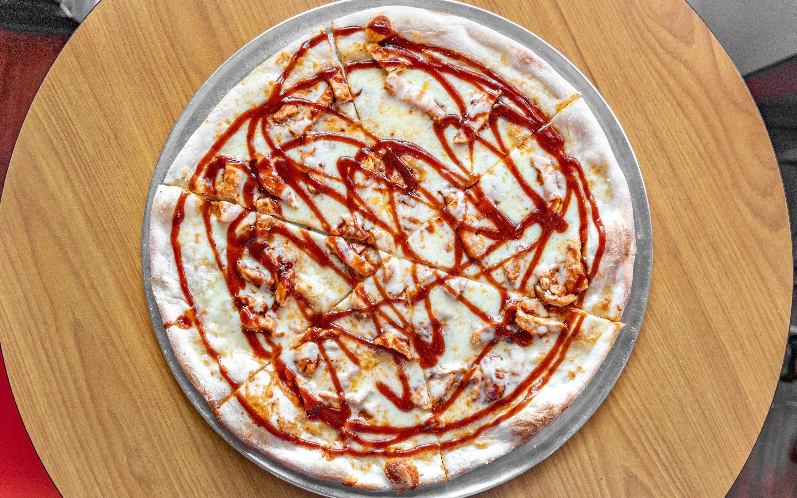
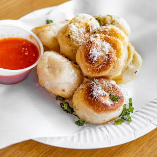
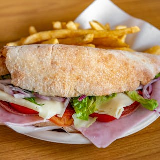

Slices By Tony
Slices By Tony offers a wide varity of pizzas, subs hot
or cold, strombolis, calzones, and deserts
Location: 1401 Tate St, Greensboro, NC
27403
Hours: 10:30am - 11:00pm, closed
sunday



East Cost Wings + Grill
East Coast Wings + Grill is a casual dining restaurant
chain known for its wide variety
of chicken wings, flavorful sauces, and a diverse menu
that includes burgers, sandwiches, and salads.
Location: 338 Tate St, Greensboro, NC
27403
Hours: 11:00am - 10:00pm weekdays,
12:00pm - 10:00pm weekends
Raaz Indian Kitchen
Raaz Indian Kitchen offers an authentic taste of Indian
cuisine, serving a variety of flavorful dishes inspired
by traditional recipes. From aromatic biryanis to rich
curries and freshly baked naan, the restaurant focuses
on using high-quality ingredients and spices to create a
vibrant and memorable dining experience.
Location: 427 Tate St, Greensboro, NC
27403
Hours: 11:30am - 10:00pm,
closed Sundays